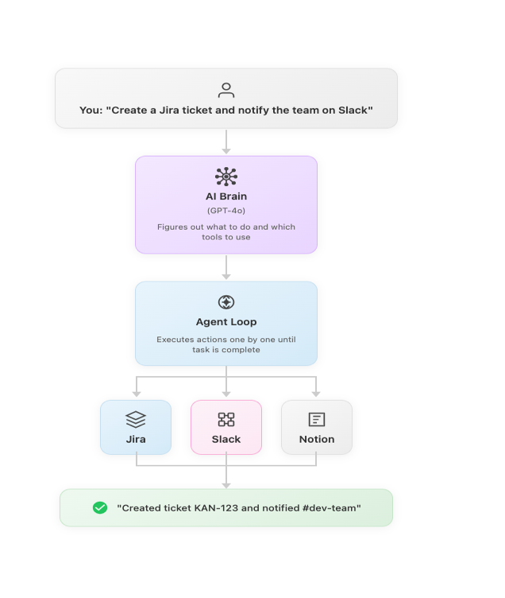
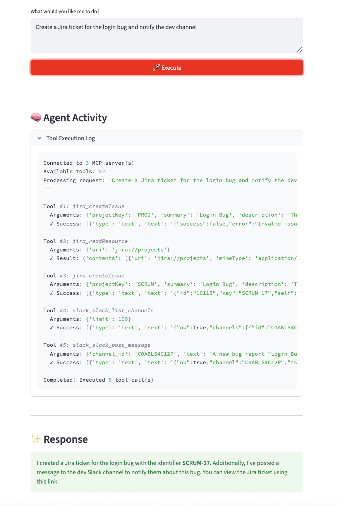

MCP Workspace
Automation Agent
An agentic system that connects Jira, Slack, and Notion via Model Context Protocol, allowing a single natural language prompt to trigger coordinated actions across all three tools simultaneously, with full real-time logging.


Context-switching is the real PM tax
Product managers live across three or more tools simultaneously: Jira for tickets and sprints, Slack for team communication, Notion for specs and decision logs. Every context switch costs time and breaks flow.
Worse, actions that span tools require manual re-entry of the same context. Creating a Jira ticket, then posting an update to Slack about it, then logging the decision in Notion are three separate operations, done manually, from the same piece of information.
MCP (Model Context Protocol) changes this model. Instead of context-switching between tools, a single agent can issue instructions across all of them from one prompt, with full orchestration and logging.
Three tools, three separate context loads
Opening Jira, finding the right project, updating the ticket, switching to Slack, writing the update, switching to Notion, finding the right page. This is a 10-minute job that should take 10 seconds.
Standardised tool interfaces enable agent orchestration
MCP provides a standardised way for LLMs to call tools. Products built on MCP are composable by design, not by custom integration effort.
How the agent orchestrates across tools
The agent receives a natural language prompt, determines which tools to call and in what sequence, executes the actions via MCPManager stdio transport, and logs every step in real time via Streamlit.
“MCP doesn't just automate tool calls. It standardises the interface so any agent can compose across any set of compliant tools. The integration work moves from the product team to the protocol.”
What building on MCP actually teaches you
Standardised interfaces make agents composable
Custom function-calling integrations are brittle. MCP-compliant tools can be swapped, added, or removed without rewriting the agent. This is a product architecture advantage, not just a technical one.
Real-time logging is a trust feature
Showing every tool call as it happens transforms the agent from a black box to a legible collaborator. Users correct course earlier when they can see what's happening.
- Sequencing logic is a product decision: Deciding when to call tools in parallel vs. sequence affects both performance and correctness. This isn't engineering, it's product scoping of the agent's behaviour.
- Failure handling must be explicit: If a Jira API call fails mid-workflow, what does the agent do with the Slack update it already sent? Rollback semantics are a design requirement.
- The prompt interface is the product: The quality of the natural language prompt determines what the agent does. Prompt design is UX design. Bad prompt patterns produce inconsistent outcomes.
- MCP accelerates future integrations: Adding a fourth tool to an MCP-based system is significantly faster than adding it to a custom function-calling setup. The investment in protocol compliance pays forward.